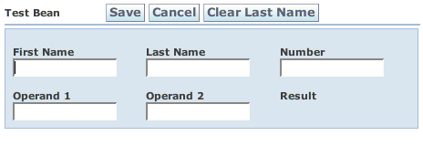

Back: SimpleExample Next: Customization
It's simple to add actions to your form. Here's the code for wicket.contrib.webbeans.examples.actions.ActionBeanPage:
Embed:wicket.contrib.webbeans.examples.actions.ActionBeanPage
Note the methods in ActionBeanPage.java: save, cancel, and clearLastName. These methods define the actions available from your Page (or whatever component the form is embedded in). By default, the action's label is derived from the method name. Every action method must have the following method signature:
public void actionName(AjaxRequestTarget target, Form form, <BeanClassName> bean)
{
...
}
The target parameter normally null. The Wicket Form is always passed in "form" and the bean that the action applies to is in "bean". BeanClassName is the class name of the bean to which the action will apply. Optionally this may be "Object" if the action should apply to all beans on your page. WWB only automatically matches actions whose "bean" parameter type matches the bean in question or Object.
This configuration yields the following page:

Back: SimpleExample Next: Customization